토목산업기사 (2005-05-29 기출문제)
1과목: 응용역학
1. 다음 그림과 같은 세 힘에 대한 합력의 작용점은 O 점에서 얼마의 거리에 있는가?
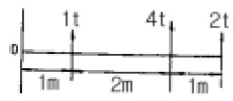
- 1m
- 2m
- 3m
- 4m
(정답률: 알수없음)

2. 다음 부정정보에서 지점B의 수직 반력은 얼마인가?(단, EI는 일정함)
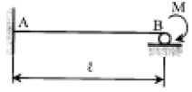
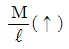
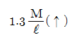
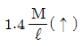
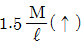
(정답률: 알수없음)
3. 그림과 같은 내민보에서 D점의 휨모멘트가 맞는 것은?
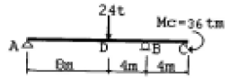
- -32t·m
- 160t·m
- 88t·m
- 40t·m
(정답률: 알수없음)
4. 지름이 4cm인 원형 강봉을 10t의 힘으로 잡아 당겼을 때 소성은 일어나지 않았고 탄성변형에 의해 길이가 1mm증가 하였다. 강봉에 축척된 탄성 변형에너지는 얼마인가?
- 1.0 t·mm
- 5.0 t·mm
- 10.0 t·mm
- 20.0 t·mm
(정답률: 알수없음)
5. 균질한 균일 단면봉이 그림과 같이 P1, P2, P3 의 하중을 B, C, D점에서 받고 있다. 각 구간의 거리 a=1.0m, b=0.4m, c=0.6m 이고 P2=10t, P3=5t의 하중이 작용할 때 D점에서의 수직방향 변위가 일어나지 않기 위한 하중 P1은 얼마인가?
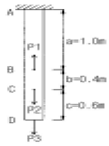
- 24t
- 20t
- 16t
- 13t
(정답률: 알수없음)
6. 그림의 구조물에서 유효강성 계수를 고려한 부재 AC의 모멘트 분배율 DFAC 는 얼마인가?
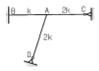
- 0.253
- 0.375
- 0.407
- 0.567
(정답률: 알수없음)
7. 다음 그림과 같은 구조물에서 사재 A의 축방향력으로 옳은 것은?
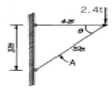
- 1.4t (인장)
- 1.9t (압축)
- 3.0t (인장)
- 4.0t (압축)
(정답률: 알수없음)
8. 그림과 같은 단순보의 중앙점에서의 처짐 y 가 옳게 된 것은?
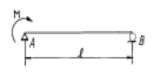
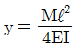
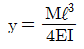
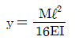
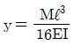
(정답률: 알수없음)
9. 길이 1m, 지름 1.5㎝의 강봉을 8t으로 당길 때 이 강봉은 얼마나 늘어나겠는가? (단, E = 2.1 × 106kg/㎝2 )
- 2.2mm
- 2.6mm
- 2.8mm
- 3.1mm
(정답률: 알수없음)
10. 트러스 해석시 가정을 설명한 것 중 틀린 것은?
- 하중으로 인한 트러스의 변형을 고려하여 부재력을 산출한다.
- 하중과 반력은 모두 트러스의 격점에만 작용한다.
- 부재의 도심축은 직선이며 연결핀의 중심을 지난다.
- 부재들은 양단에서 마찰이 없는 핀으로 연결되어 진다.
(정답률: 알수없음)
11. 기둥에 관한 다음 설명 중 가장 올바른 것은?
- 장주(long column)라 함은 길이가 긴 기둥을 말한다.
- 단주(short column)는 좌굴이 발생하기 전에 재료의 압축파괴가 먼저 일어난다.
- 동일한 단면, 길이 및 재료를 사용한 기둥은 기둥 단부의 구속조건을 다르게 하더라도 기둥의 거동특성이 달라질 수 없다.
- 편심하중이 재하된 장주의 하중-변위(p-δ) 관계에는 겹침의 원리가 적용된다.
(정답률: 알수없음)
12. 다음 그림의 캔틸레버에서 A점의 휨 모멘트는?
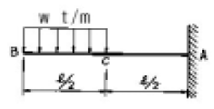
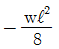
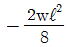
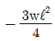
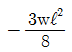
(정답률: 알수없음)
13. 다음 중 트러스의 해법이 아닌 것은?
- 격점법
- 단면법
- 도해법
- 휨응력법
(정답률: 알수없음)
14. 재질 및 단면이 같은 다음의 2개의 외팔보에서 자유단의 처짐을 같게하는 P1/P2의 값이 바른 것은?
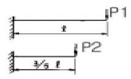
- 0.216
- 0.325
- 0.437
- 0.546
(정답률: 알수없음)
15. 반지름 r인 원형단면에서 최대의 단면계수를 갖는 사각형의 폭과 높이의 비(b/h)로서 옳은 것은?
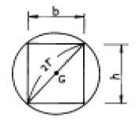
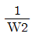
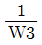
- 1/2
- 1
(정답률: 알수없음)
16. x축으로부터 빗금친 부분의 도형에 대한 도심까지의 거리를 구하면?
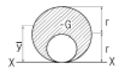
- (4/6)r
- (5/6)r
- (6/6)r
- (7/6)r
(정답률: 알수없음)
17. 그림과 같은 게르버보의 A점의 전단력으로 맞는 것은?
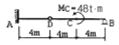
- 4t
- 6t
- 12t
- 24t
(정답률: 알수없음)
18. 그림과 같은 단주에 P=230kg의 편심하중이 작용할 때 단면에 인장력이 생기지 않기 위한 편심거리 e의 최대값은?
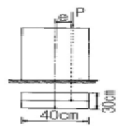
- 4.11cm
- 5.76cm
- 6.67cm
- 7.77cm
(정답률: 알수없음)
19. 다음 그림에서 지점 C의 반력이 영(零)이 되기 위해 B점에 작용시킬 집중하중의 크기는?
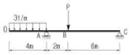
- 8t
- 10t
- 12t
- 14t
(정답률: 알수없음)
20. 그림과 같은 I형 단면에서 중립축 x에 대한 단면 2차모멘트는?
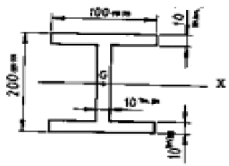
- 4374.00cm4
- 6666.67cm4
- 2292.67cm4
- 3574.76cm4
(정답률: 알수없음)
2과목: 측량학
21. 다각 측량을 하여 다음과 같은 결과를 얻었다. D점의 합경거는?
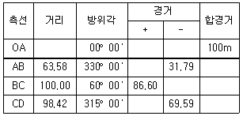
- 148.50m
- 150.76m
- 85.22m
- 80.32m
(정답률: 알수없음)
22. 직접고저측량을 하여 2km 왕복에 오차가 5mm 발생했다면 같은 정확도로 8km를 왕복측량 했을 때 오차는?
- 5mm
- 10mm
- 15mm
- 20mm
(정답률: 알수없음)
23. 다음 표는 도로 중심선을 따라 20m 간격으로 종단측량을 실시한 결과이다. No.1의 계획고를 52m로 하고 3%의 상향구배로 설계한다면 No.5의 성토 또는 절토고는?
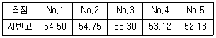
- 2.82m (성토)
- 2.22m (성토)
- 2.82m (절토)
- 2.22m (절토)
(정답률: 알수없음)
24. 다음의 완화곡선에 대한 설명중 옳지 않은 것은?
- 완화곡선의 접선은 시점에서 원호에, 종점에서 직선에 접한다.
- 곡선의 반지름은 완화곡선의 시점에서 무한대, 종점에서 원곡선의 반지름으로 된다.
- 종점의 칸트는 원곡선의 칸트와 같다.
- 완화곡선에 연한 곡선반경의 감소율은 칸트의 증가율과 같다.
(정답률: 알수없음)
25. 다음 열거한 등고선의 성질 중 틀린 것은?
- 등고선은 도면 내,외에서 반드시 폐합한다.
- 최대 경사방향은 등고선과 직각방향으로 교차한다.
- 등고선은 급경사지에서는 간격이 넓어지며, 완경사지에서는 간격이 좁아진다.
- 등고선이 도면내에서 폐합하는 경우 산정이나 분지를 나타낸다.
(정답률: 알수없음)
26. 국제 UTM 좌표의 적용범위는?
- 북위 42°‾ 남위 40°
- 북위 62°‾ 남위 60°
- 북위 70°‾ 남위 70°
- 북위 84°‾ 남위 80°
(정답률: 알수없음)
27. 각측정 결과 방위각이 0°혹은 180°에 가까울 때 각측정 오차가 위거 및 경거에 미치는 영향에 대한 설명으로 옳은 것은?
- 경거에 미치는 영향이 크다.
- 위거에 미치는 영향이 크다.
- 위거와 경거에 미치는 영향은 같다.
- 영향이 없다.
(정답률: 알수없음)
28. 한 기선장을 4구간으로 나누어 각각 독립적으로 측정하여 다음과 같은 값을 얻었다.
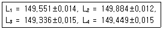
전장 L=L1+L2+L3+L4 = 598.220m일 때 전장에 대한 표준오차는 얼마인가?- ±0.060m
- ±0.⑤6m
- ±0.014m
- ±0.028m
(정답률: 알수없음)
29. 사진측량의 특수3점이 아닌 것은?
- 표정점
- 주점
- 연직점
- 등각점
(정답률: 알수없음)
30. 삼각측량에서 내각을 600에 가깝도록 정하는 것을 원칙으로 하는 이유로 가장 타당한 것은?
- 시각적으로 보기 좋게 배열하기 위하여
- 각 점이 잘 보이도록 하기 위하여
- 측각의 오차가 변장에 미치는 영향을 최소화하기 위하여
- 선점 작업의 효율성을 위하여
(정답률: 알수없음)
31. 촬영고도 4,000m에서 종중복도 60%인 2장의 사진에서 주점기선장이 각각 102mm와 95mm였다면 비고 50m 철탑의 시차차는 얼마인가? (단, 카메라 초점거리는 15cm임)
- 1.23mm
- 1.42mm
- 2.37mm
- 2.42mm
(정답률: 알수없음)
32. 직접법으로 등고선을 측정하기 위하여 B점에 레벨을 세우고 표고가 75.25m인 P점에 세운 표척을 시준하여 0.85m를 측정했다. 68m인 등고선 위의 점 A를 정하려면 시준하여야 할 표척의 높이는?
- 8.1m
- 5.6m
- 6.7m
- 9.5m
(정답률: 알수없음)
33. 곡선 설치에서 교각이 32°15′이고 곡선반경이 500m일 때 곡선시점의 추가거리가 315.45m이면 곡선종점의 추가거리는 얼마인가?
- 593.88m
- 596.88m
- 623.63m
- 625.36m
(정답률: 알수없음)
34. 하천 양안의 고저차를 측정하기 위하여 교호수준측량을 행하는 이유로 가장 옳은 것은?
- 지상의 변화에 의한 오차나 기계오차를 제거하기 위하여
- 기구의 곡률오차를 없애기 위하여
- 과실에 의한 오차를 없애기 위하여
- 개인오차를 없애기 위하여
(정답률: 알수없음)
35. 시거측량을 한 결과 협장 ℓ= 0.76m, 연직각 α= +15°를 얻었다. 이 때 고저차(H)와 수평거리(D)는 얼마인가?(단, K = 100, C = 0로 한다.)
- H = 19m, D = 70.91m
- H = 19m, D = 70.19m
- H = 21m, D = 80.91m
- H = 21m, D = 80.19m
(정답률: 알수없음)
36. 교호수준측량의 결과가 다음과 같다. A점의 표고가 55.423m일 때 B점의 표고는? (단, a1=2.665m, a2=0.530m, b1=3.965m, b2=1.116m)
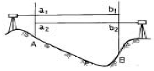
- 52.930m
- 54.480m
- 56.366m
- 57.916m
(정답률: 알수없음)
37. 범세계적 위치결정체계(GPS)에 대한 설명중 옳지 않은 것은?
- 기상에 관계없이 위치결정이 가능하다.
- NNSS의 발전형으로 관측소요시간 및 정확도를 향상시킨 체계이다.
- 우주 부분, 제어 부분, 사용자 부분으로 구성되어있다.
- 사용되는 좌표계는 WGS72이다.
(정답률: 알수없음)
38. 최소 제곱법의 원리를 이용하여 처리할 수 있는 오차는?
- 정오차
- 부정오차
- 착오
- 물리적오차
(정답률: 알수없음)
39. 축척 1:50000 지도상의 4cm2 에 대한 지상에서의 실제면적은 얼마인가?
- 1km2
- 20km2
- 2km2
- 200km2
(정답률: 알수없음)
40. 삼각측량시 삼각망 조정의 세가지 조건이 아닌 것은?
- 각조건
- 측점조건
- 구과량조건
- 변조건
(정답률: 알수없음)
3과목: 수리학
41. 수로폭 4m,수심 1.5m인 직사각형 수로에서 유량 24m3/sec가 흐를 때 흐르드수(froude number)와 흐름의 상태는?
- 1.04, 상류
- 1.04, 사류
- 0.74, 상류
- 0.74, 사류
(정답률: 알수없음)
42. 사각형단면 개수로의 수리상 유리한 형상의 단면에서 수로 수심이 1.5m이었다면 이 수로의 경심은?
- 3.0m
- 2.25m
- 1.0m
- 0.75m
(정답률: 알수없음)
43. 지하수의 유속공식에서 투수계수(K)의 변화와 관계가 없는 것은?
- 물의 점성계수
- 지하수위
- 토사의 입경
- 토사의 공극률
(정답률: 알수없음)
44. 침투지수법에 의한 침투능 추정방법에 관한 다음 설명중 틀린 것은?
- 침투지수란 호우기간의 총침투량을 호우지속기간으로 나눈 것이다.
- ø-index는 강우주상도에서 유효우량과 손실우량을 구분하는 수평선에 상응하는 강우강도와 크기가 같다.
- W-index는 강우강도가 침투능보다 큰 호우기간 동안의 평균침투율이다.
- ø-index법은 침투능의 시간에 따른 변화를 고려한 방법으로서 가장 많이 사용된다.
(정답률: 알수없음)
45. 수심 3m인 수조에 높이 2m인 직사각형 수문이 바닥에서부터 연직으로 설치되어 있을 경우 수문에 작용하는 단위폭당 전수압은?
- 4 t
- 3 t
- 2 t
- 1 t
(정답률: 알수없음)
46. 안지름 50㎝인 강관에 최고 P = 15㎏/㎝2의 수압이 작용한다고 할 때 가장 적당한 강관의 두께는? (단, 강의 허용인장응력은 σa = 1,400㎏/㎝2이다.)
- 3㎜
- 10㎜
- 15㎜
- 18㎜
(정답률: 알수없음)
47. 그림과 같이 물을 채운 용기에서 D점의 절대압력은? (단, 대기압 = 1.033kg/cm2)
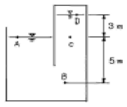
- 2.066㎏/㎝2
- 1.233kg/m2
- 1.033㎏/㎝2
- 0.733㎏/㎝2
(정답률: 알수없음)
48. 다음 중 개수로의 지배단면(control section)에 대한 설명으로 옳은 것은?
- 층류에서 난류로 변하는 지점의 단면
- 상류에서 사류로 변하는 지점의 단면
- 사류에서 상류로 변하는 지점의 단면
- 동일단면에서 최대유량이 흐르는 단면
(정답률: 알수없음)
49. 다음 중 부체가 안정된 상태에 있을 조건으로 옳은 것은?
- 경심 M이 부체의 중심(重心) G보다 위에 있다.
- 경심 M이 부체의 중심(重心) G보다 아래에 있다.
- 경심 M이 부체의 부심(浮心) C보다 위에 있다.
- 경심 M이 부체의 부심(浮心) C보다 아래에 있다.
(정답률: 알수없음)
50. 이중 누가 우량분석법(Double Mass Curve Analysis)에 관한 설명중 옳은 것은?
- 유역의 평균 우량 산정법이다.
- 우량자료를 확충하기 위한 방법이다.
- 우량자료가 결측 되었을 경우 사용한다.
- 강우자료에 일관성을 주기 위한 방법이다.
(정답률: 알수없음)
51. IDF도(圖)를 이용하여 강우강도를 구하기 위해서 필요한 요소로 짝지어진 것은?
- 강우강도식, 생기빈도
- 유역면적, 최대강우량
- 강우지속기간, 재현기간
- 면적강우량비, 빈도계수
(정답률: 알수없음)
52. 그림과 같이 직경이 10㎝인 단면에 유속 40m/sec의 분류가 판에 충돌하여 90°로 구부러 질 때 판에 작용하는 힘은?
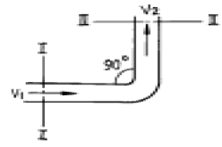
- 1.28t
- 1.40t
- 1.52t
- 1.74t
(정답률: 알수없음)
53. 오리피스에서 유출되는 실제유량은 Q = Ca·Cv·A·V로 표현한다. 이 때 수축계수 Ca는? (단, A0는 수맥의 최소 단면적, A는 오리피스의 단면적, V는 실제유속, VO는 이론유속)
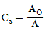
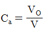
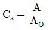
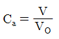
(정답률: 알수없음)
54. 관수로에 물이 흐를 때 층류(層流)가 되는 경우는? (단, Re는 레이놀즈(Reynolds) 수이다.)
- Re ＞ 4000
- 4000 ＞ Re ＞ 2000
- Re ＞ 2000
- Re ＜ 2000
(정답률: 알수없음)
55. 그림과 같은 용기에 물을 넣고 연직하방향으로 가속도 α를 중력가속도 만큼 작용했을 때 용기 내의 물에 작용하는 압력 P는?
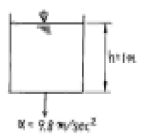
- P = 0
- P = 1t/m2
- P = 2t/m2
- P = 3t/m2
(정답률: 알수없음)
56. 그림과 같은 수중 오리피스에서 오리피스 단면적이 50cm2 일 때 유출량 Q는? (단, 유량계수 C = 0.62임)
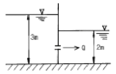
- 약 13.7ℓ/sec
- 약 15.7ℓ/sec
- 약 23.7ℓ/sec
- 약 15.7ℓ/sec
(정답률: 알수없음)
57. 가능최대강수량(PMP)의 주요 용도에 대한 설명으로 옳은 것은?
- 대규모 수공구조물의 설계홍수량을 결정하는데 사용된다.
- 강우량과 장기변동성향을 판단하는데 사용된다.
- 최대강우강도와 면적관계를 결정하는데 사용된다.
- 홍수량 빈도해석에 사용된다.
(정답률: 알수없음)
58. 개수로에서 한계수심에 대한 설명으로 옳은 것은?
- 최대 비에너지에 대한 수심
- 최소 비에너지에 대한 수심
- 상류흐름의 수심
- 사류흐름의 수심
(정답률: 알수없음)
59. 유체 내부의 임의의 점(x,y,z)에 있어서의 속도의 방향 성분을 시간 t에 있어서 각각 u,v,w로 표시할 때 유체의 밀도를 ρ라고 하면 비압축성 유체에 대하여 연속방정식을 간단하게 정리한 식은?
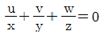
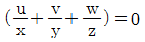
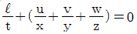
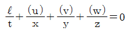
(정답률: 알수없음)
60. 수면이 부체를 절단하는 가상면을 무엇이라 하는가?
- 부력면
- 부심면
- 부양면
- 흘수면
(정답률: 알수없음)
4과목: 철근콘크리트 및 강구조
61. 철근콘크리트 단순보는 설계하중 하에서 지점부근에 균열이 발생하기 쉽다. 이러한 균열을 제어하기 위한 가장 효과적인 방법은?
- 스터럽을 적절하게 배근한다.
- 상단에 주근을 배근한다.
- 하단에 주근을 배근한다.
- 상·하단에 주근을 배근한다.
(정답률: 알수없음)
62. 1방향 슬래브에서 건조수축 및 온도변화에 저항하는 철근의 간격은 슬래브 두께의 (A)배 이하, 또한 (B)mm이하라야 하는데, 이 경우 A와 B로 올바른 것은?
- A:5, B:300
- A:4, B:300
- A:5, B:400
- A:4, B:400
(정답률: 알수없음)
63. 압축 부재의 설계시 고려해야 할 사항으로 옳지 않은 것은?
- 띠철근 압축부재 단면의 최소 치수는 200mm이고, 그 단면적은 60,000mm2 이상이어야 한다.
- 나선철근 압축부재 단면의 심부 지름은 100mm 이상이어야 한다.
- 나선철근의 항복 강도는 400MPa 이하이어야 한다.
- 축방향 부재의 주철근의 최소개수는 나선철근으로 둘러싸인 철근의 경우 6개이다.
(정답률: 알수없음)
64. 그림과 같은 맞대기 용접이음의 유효길이는 얼마인가?
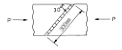
- 150mm
- 300mm
- 400mm
- 600mm
(정답률: 알수없음)
65. 인장 부재의 볼트 연결부를 설계 할 때 고려 되지 않는 항목은?
- 지압응력
- 볼트의 전단응력
- 부재의 항복응력
- 부재의 좌굴응력
(정답률: 알수없음)
66. 보통골재를 사용한 콘크리트와 항복강도 400MPa인 철근을 갖는 단순지지 보에서 처짐 계산을 하지 않아도 되는 부재의 최소 두께는 얼마 이상이어야 하는가? (단, L은 경간)
- L/14
- L/16
- L/18
- L/20
(정답률: 알수없음)
67. 그림과 같은 복철근 직사각형보에서 인장철근비 ￠와 압축 철근비 ￠' 는 각각 얼마인가?
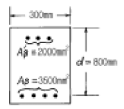
- ￠ = 0.002 ￠' = 0.018
- ￠ = 0.023 ￠' = 0.007
- ￠ = 0.015 ￠' = 0.008
- ￠ = 0.003 ￠' = 0.006
(정답률: 알수없음)
68. 강도설계법에서 그림의 단면을 가진 압축부재의 최대설계 축방향 하중 Pu는? (단, fck=20MPa, fy=300MPa, φ=0.7, Ast=4000mm2이며 단주임)
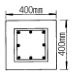
- 2655 kN
- 2406 kN
- 2157 kN
- 2003 kN
(정답률: 알수없음)
69. 일단 정착의 포스트텐션 부재에서 정착부 활동량이 3mm 생겼다. PS강재의 길이 40m, 초기인장응력 1000MPa, Ep=2.0x105MPa일때 PS강재의 프리스트레스의 감소량(뽁fp)은 얼마인가?
- 15 MPa
- 30 MPa
- 45 MPa
- 60 MPa
(정답률: 알수없음)
70. 철근의 이음 등급에서 A급 이음의 조건은 다음 중 어느 것인가?
- 배근된 철근량이 이음부 전체 구간에서 해석결과 요구되는 소요 철근량 2배 이상이고 소요 겹침이음 길이내겹침이음된 철근량이 전체 철근량의 1/3이상인 경우
- 배근된 철근량이 이음부 전체 구간에서 해석결과 요구되는 소요 철근량의 2배 이하이고 소요 겹침이음 길이 내 겹침이음된 철근량이 전체 철근량의 1/2이상인 경우
- 배근된 철근량이 이음부 전체 구간에서 해석결과 요구되는 소요 철근량의 2배 이상이고 소요 겹침이음 길이 내 겹침이음된 철근량이 전체 철근량의 1/2이하인 경우
- 배근된 철근량이 이음부 전체 구간에서 해석결과 요구되는 소요 철근량의 2배 이하이고 소요 겹침이음 길이 내 겹침이음된 철근량이 전체 철근량의 1/3이하인 경우
(정답률: 알수없음)
71. 다음중 강도설계법에서 적용되는 부재별 강도감소계수가 잘못된 것은? (단, 보통 철근콘크리트부재)
- 휨과 축인장을 받는 부재 : 0.85
- 나선철근 기둥 : 0.75
- 전단과 비틀림을 받는 부재 : 0.80
- 지압을 받는 부재 : 0.75
(정답률: 알수없음)
72. 그림과 같은 단철근 직사각형보의 전단에 대한 위험단면에서의 전단력은 얼마인가?
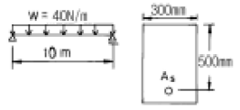
- 120 N
- 180 N
- 210 N
- 240 N
(정답률: 알수없음)
73. 직사각형 단면 300mm-400mm 인 프리텐션부재에 550mm2의 단면적을 가진 PS강선을 단면도심에 배치하고 1350MPa의 인장응력을 가하였다. 콘크리트의 탄성변형에 따라 실제로 부재에 작용하는 유효프리스트레스량은 얼마인가?(단, n = 6)
- 1313 MPa
- 1432 MPa
- 1512 MPa
- 1618 MPa
(정답률: 알수없음)
74. 스터럽의 간격은 다음의 어느 것에 반비례 하는가?
- 스터럽의 단면적
- 철근의 허용 인장응력
- 스터럽이 부담해야 할 전단력
- 보의 유효깊이
(정답률: 알수없음)
75. 강도 설계법에서 휨 부재의 등가 사각형 압축 응력 분포의 깊이 a = β1ㆍC인데 이 중 fck가 35MPa이라면 계수 β1의 값은?
- 0.850
- 0.801
- 0.776
- 0.754
(정답률: 알수없음)
76. 콘크리트의 크리프에 대한 설명중 틀린 것은?
- 물-시멘트비가 크면 크리프는 감소한다.
- 응력을 받는 시점의 콘크리트 재령이 클수록 크리프는 감소한다.
- 온도가 높을수록 크리프는 증가한다.
- 습도가 높을수록 크리프는 감소한다.
(정답률: 알수없음)
77. 그림에 나타난 직사각형 단철근보의 공칭 전단강도Vn을 계산하면? (단, 철근 D10을 수직스터럽(stirrup)으로 사용하며, 스터럽 간격은 200mm, 철근 D10 1본의 단면적은 71.3mm2, fck=28MPa, fy=350MPa이다.)
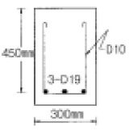
- 119 kN
- 176 kN
- 231 kN
- 287 kN
(정답률: 알수없음)
78. 다음 사항 중 프리스트레스트 콘크리트의 장점이 아닌 것은 어느 것인가?
- 구조물의 자중이 가볍고 복원성이 우수하다.
- 철근콘크리트에 비하여 강성이 크고 진동이 적다.
- 부재에 확실한 강도와 안전율을 갖게 할 수 있다.
- 설계하중하에서는 균열이 생기지 않으므로 내구성이 크다.
(정답률: 알수없음)
79. 그림과 같은 복철근 직사각형 보에서 강도 설계법에 의한 단면의 총 설계휨모멘트 강도 φMn은? (단, As = 6 - D29 = 3852 mm2, As' = 2 - D22 = 774 mm2, d' = 50 mm, fck = 22MPa, fy = 320 MPa)
- 351.5 kNㆍm
- 380.1 kNㆍm
- 450.4 kNㆍm
- 492.2 kNㆍm
(정답률: 알수없음)
80. fck = 24MPa, fy = 300MPa일 때 다음 그림과 같은 보의 균형 철근비(ρb)는?
- 0.0013
- 0.0129
- 0.0385
- 0.0488
(정답률: 알수없음)
5과목: 토질 및 기초
81. CBR에 대한 설명중 옳지 않은 것은?
- CBR 값은 강성포장의 두께를 결정하는데 주로 쓰이는 값이다.
- CBR 시험은 실내에서 수행할 수도 있고 현장에서도 수행할 수 있다.
- 다짐한 흙시료에 직경 5㎝의 강봉을 관입시켰을 때의 관입량과 하중강도와의 비를 백분율로 표시한 값이다.
- CBR5.0 ＞ CBR2.5의 경우 재시험하고 그래도 CBR5.0가 CBR2.5보다 클 때는 CBR5.0 값을 CBR 값으로 한다.
(정답률: 알수없음)
82. 직경 5cm, 높이 10cm인 연약점토 공시체를 일축압축시험한 결과 파괴시 압축력이 2.2kg, 축방향변위가 9mm이었다면 일축압축강도(qu)는?
- qu = 0.3 kg/cm2
- qu = 0.2 kg/cm2
- qu = 0.25 kg/cm2
- qu = 0.1 kg/cm2
(정답률: 알수없음)
83. 연약점토지반을 굴착할 때 sheet pile을 박고 내부의 흙을 파내면 sheet pile 배면의 토괴중량이 굴착 저면의 지지력과 소성평형상태에 이르러 굴착 저면이 부푸는 현상은?
- heaving
- boiling
- quick sand
- slip
(정답률: 알수없음)
84. 다음중 사운딩(sounding)이 아닌 것은?
- 표준관입시험
- 일축압축시험
- 원추관입시험
- 베인시험
(정답률: 알수없음)
85. 내부마찰각 ♀=0인 점토에 대하여 일축압축실험을 하였더니 일축 압축강도가 qu=5.6kg/cm2 이었다. 이 흙의 점착력은?
- 2.4kg/cm2
- 2.8kg/cm2
- 1.2kg/cm2
- 1.8kg/cm2
(정답률: 알수없음)
86. 말뚝의 허용지지력을 구하는 Sander의 공식은?(단, Ra:허용지지력, S:관입량, WH:해머의 중량)
(정답률: 알수없음)
87. 사질토층에 물이 침투할 때 침투유량이 같은 조건에서 만약 사질토의 입경이 2배로 커진다면 침투 동수구배는 몇 배로 변하는가?
- 4 배
- 1/4 배
- 2 배
- 1/2 배
(정답률: 알수없음)
88. 사질지반에 있어서 강성기초의 접지압 분포에 관한 다음 설명 중 옳은 것은?
- 기초의 모서리 부분에서 최대응력이 발생한다.
- 기초의 중앙부에서 최대응력이 발생한다.
- 기초의 밑면에서는 어느 부분이나 동일하다.
- 기초 밑면에서의 응력은 토질에 상관없이 일정하다.
(정답률: 알수없음)
89. 흙중의 한점에서 최대 및 최소 주응력이 각각 1㎏/㎝2 및 0.6㎏/㎝2일 때, 이 점을 지나 최소 주응력면과 60도를 이루는 면상의 전단응력은?
- 0.10㎏/㎝2
- 0.17㎏/㎝2
- 0.40㎏/㎝2
- 0.69㎏/㎝2
(정답률: 알수없음)
90. 동상을 방지하기 위한 대책으로 잘못 설명된 것은?
- 배수구를 설치하여 지하수위를 저하시킨다.
- 지표의 흙을 화학약액으로 처리한다.
- 흙 속에 단열재를 설치한다.
- 모관수를 차단하기 위해 세립토층을 지하수면 위에 설치한다.
(정답률: 31%)
91. 점토 광물중에서 3층 구조로 구조결합 사이에 치환성 양이온이 있어서 활성이 크고, sheet 사이에 물이 들어가 팽창,수축이 크고 공학정 안정성은 제일 약한 점토 광물은?
- kaolinite
- illite
- montmorillonite
- vermiculite
(정답률: 알수없음)
92. 다음의 토질정수중에서 사면안정 검토에 직접적인 영향을 끼치지 않는 것은?
- 흙의 단위 중량(γt)
- 흙의 내부마찰각(φ)
- 흙의 소성지수(PI)
- 흙의 점착력(C)
(정답률: 알수없음)
93. 점토시료를 가지고 압밀시험을 하였다. 다음 설명중 틀린것은?
- 압밀하중을 가하면 간극률은 작아진다.
- 과잉간극수압이 소산되면 1차 압밀이 완료된 것이다.
- 압밀하중을 제거하면 간극률은 커진다.
- 단단한 점토일수록 압축지수가 크다.
(정답률: 알수없음)
94. 점성토 지반에 사용하는 연약지반 개량공법으로 거리가 먼것은?
- Sand drain 공법
- 침투압 공법(MAIS 공법)
- Vibro floatation 공법
- 생석회 말뚝 공법
(정답률: 알수없음)
95. 지표면에 8t의 집중하중이 작용할 때 하중작용 위치 직하 2m 위치에 있어서의 연직응력은 약 얼마인가?(단, 영향치는 0.4775임)
- 4.0t/m2
- 1.0t/m2
- 2.0t/m2
- 6.0t/m2
(정답률: 알수없음)
96. 표준관입 시험에서 N치에 대한 설명으로 옳은 것은?
- 스프릿스푼 샘플러를 주어진 에너지로 타격할 때 20㎝ 관입하는데 소요되는 타격회수이다.
- 스프릿스푼 샘플러를 주어진 에너지로 타격할 때 30㎝ 관입하는데 소요되는 타격회수이다.
- 스프릿스푼 샘플러를 주어진 에너지로 타격할 때 20㎝ 관입하는데 소요되는 타격당 침하량이다.
- 스프릿스푼 샘플러를 주어진 에너지로 타격할 때 30㎝ 관입하는데 소요되는 타격당 침하량이다.
(정답률: 알수없음)
97. 풍화작용에 의하여 분해되어 원 위치에서 이동하지 않고 모암의 광물질을 덮고 있는 상태의 흙은?
- 호상토(Lacustrine soil)
- 충적토(Alluvial soil)
- 빙적토(Glacial soil)
- 잔적토(Residual soil)
(정답률: 알수없음)
98. 사질토의 정수위 투수 시험을 하여 다음의 결과를 얻었다. 투수계수는 얼마인가? (단, 투수량 Q = 400㏄,시료의 직경 d = 10㎝, 투수시간 t = 180초, 수두차 h = 15㎝, 시료의 길이 L = 12㎝)
- 2.26 x 10-2㎝/sec
- 1.76 x 10-2㎝/sec
- 1.63 x 10-2㎝/sec
- 0.99 x 10-2㎝/sec
(정답률: 알수없음)
99. 충분히 다진 현장에서 모래 치환법에 의해 현장밀도 실험을 한 결과 구멍에서 파낸 흙의 무게가 1530g, 함수비가 14%이었고 구멍에 채워진 단위중량이 1.70g/㎝3인 표준모래의 무게가 1400g이었다. 이 현장이 95% 다짐도가 된 상태가 되려면 이 흙의 실내실험실에서 구한 γdmax은 다음중 어느 것인가?
- 1.72g/㎝3
- 1.76g/㎝3
- 1.79/㎝3
- 1.83g/㎝3
(정답률: 알수없음)
100. 주동토압계수 KA, 수동토압계수 KP, 정지토압계수 Ko의 크기가 맞는 것은?
- KA ＞ KP ＞ Ko
- KP ＞ Ko ＞ KA
- KA ＞ Ko ＞ KP
- Ko ＞ KP ＞ KA
(정답률: 알수없음)
6과목: 상하수도공학
101. 그림에서와 같은 하수관의 접합방식은?
- 관정접합
- 관저접합
- 수면접합
- 중심접합
(정답률: 알수없음)
102. 펌프의 비회전도(Ns)에 관한 설명으로 옳지 않은 것은?
- 1m3/sec의 유량에서 단위양정(1m)을 발생시킬 경우의 회전수를 의미한다.
- Ns의 값이 작을수록 소수량 고양정이고 클수록 대수량 저양정 펌프가 된다.
- Ns에 따라 펌프의 특성이 정해진다.
- 수량 및 총양정이 같으면 회전수가 클수록 Ns가 크다.
(정답률: 알수없음)
103. 합류식 하수도의 설명으로 틀린 것은?
- 초기 우수를 처리할 수 있다.
- 분류식에 비해 건설비가 적게 든다.
- 강우시 수세효과가 있다.
- 관거오접 문제가 발생할 수 있다.
(정답률: 알수없음)
104. 펌프에서 공동현상이 발생될 수 있는 조건이 아닌 것은?
- 흡입관의 직경이 크고 임펠러가 수중에 잠겨있다.
- 펌프가 흡수면으로부터 매우 높이 설치되어 있다.
- 펌프의 과속으로 인하여 유량이 증가한다.
- 관내 수온이 포화증기압 이상으로 증가한다.
(정답률: 알수없음)
1⑤. 취수구를 상하에 설치하여 수위에 따라 좋은 수질을 선택, 취수할 수 있으며, 수심이 일정이상 되는 지점에 설치하면 연간 안정적인 취수가 가능한 시설은?
- 취수언제
- 취수탑
- 취수문
- 취수관거
(정답률: 알수없음)
106. 침전지에서 침전효율을 크게하기 위한 조건으로서 옳은 것은?
- 유량을 적게 하거나 표면적을 크게 한다.
- 유량을 많게 하거나 표면적을 크게 한다.
- 유량을 적게 하거나 표면적을 적게 한다.
- 유량을 많게 하거나 표면적을 적게 한다.
(정답률: 알수없음)
107. 하천수의 자정작용(self-purification)에서 유기물의 분해과정에 가장 중요한 지위를 차지하는 작용은?
- 생물학적 작용
- 화학적 작용
- 물리적 작용
- 희석 작용
(정답률: 알수없음)
108. BOD가 94.8mg/L인 오수 5m3/h를 유량이 50m3/h인 하천에 방류한 결과 BOD가 14.1mg/L가 되었다. 오수가 유입되기 이전에 하천의 BOD는?
- 4.0mg/L
- 6.0mg/L
- 2.0mg/L
- 8.0mg/L
(정답률: 알수없음)
109. 다음 그림은 어떤 처리방식을 나타낸 것인가?
- 표준활성슬러지법
- 계단식폭기법
- 접촉안정법
- 산화구법
(정답률: 알수없음)
110. 수지상식 배수관망에 비해 격자식 배수관망이 갖는 장점이 아닌 것은?
- 사용량 변화에 대처하기 쉽다.
- 수리계산이 단순하다.
- 단수구역이 좁아진다.
- 수압유지가 쉽다.
(정답률: 알수없음)
111. 다음 중 상수의 일반적인 정수과정 순서로서 옳은 것은?
- 응집 → 침전 → 소독 → 여과
- 응집 → 침전 → 여과 → 소독
- 응집 → 여과 → 침전 → 소독
- 응집 → 여과 → 소독 → 침전
(정답률: 알수없음)
112. 마을 전체의 수압을 안정시키기 위해서는 급수탑 바로 밑의 관로 계기수압이 2.5kg/cm2 가 되어야 한다. 이를 만족시키기 위하여 급수탑은 관로로부터 몇 m 높이에 수위를 유지하여야 하는가?
- 5m
- 10m
- 20m
- 25m
(정답률: 알수없음)
113. 하수처리법 중 활성슬러지법에 대한 설명으로 옳은 것은?
- 호기성미생물의 대사작용에 의하여 유기물을 제거한다.
- 부유물을 활성화시켜 침전·부착 시킨다.
- 부유생물을 이용하는 방법과 쇄석 등의 표면에 부착한 생물막을 이용하는 방법 등이 있다.
- 세균을 제거함으로써 슬러지를 정화한다.
(정답률: 알수없음)
114. BOD 값이 크다는 것이 의미하는 것은?
- 미생물 분해가 가능한 물질이 많다.
- 영양염류가 풍부하다.
- 용존산소가 풍부하다.
- 무기물질이 충분하다.
(정답률: 알수없음)
115. 염소소독을 위한 염소주입률과 잔류염소농도와의 관계가 그림과 같다. 그림에서 파괴점(break point)은?
- B
- C
- D
- E
(정답률: 알수없음)
116. 다음은 하수처리장 부지선정에 관한 설명으로 옳지 않은 것은?
- 홍수로 인한 침수 위험이 없어야 한다.
- 방류수가 충분히 희석, 혼합되어야 하며 상수도 수원 등에 오염되지 않는 곳을 선택한다.
- 처리장의 부지는 장래 확장을 고려해서 넓게 하며 주거 및 상업지구에 인접한 곳이어야 한다.
- 오수 또는 폐수가 하수처리장까지 가급적 자연유하식으로 유입하고 또한 자연유하로 방류하는 곳이 좋다.
(정답률: 알수없음)
117. 급수보급율 95%, 계획1인1일 최대급수량 400L/인·일, 인구 15만명의 도시에 급수계획을 하고자 한다. 이 도시의 계획 1일 최대급수량은?
- 39900m3/day
- 48450m3/day
- 57000m3/day
- 65550m3/day
(정답률: 알수없음)
118. 유역면적 2㎞2, 유출계수 0.6인 어느 지역에서 2시간 동안에 70㎜의 호우가 내렸다. 합리식에 의한 이 지역의 우수 유출량은?
- 10.5m3/sec
- 11.7m3/sec
- 42.0m3/sec
- 70.0m3/sec
(정답률: 알수없음)
119. 다음에서 하수 슬러지 처리의 목적이 아닌 것은?
- 슬러지 부피의 감소
- 중금속의 제거
- 안정화
- 병원균 처리
(정답률: 알수없음)
120. 활성슬러지법에서 MLSS가 의미하는 것은?
- 폐수 중의 부유물질
- 방류수 중의 부유물질
- 폭기조 중의 부유물질
- 반송슬러지 중의 부유물질
(정답률: 알수없음)